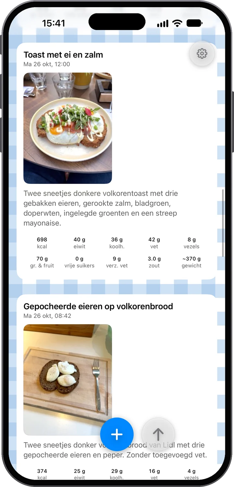
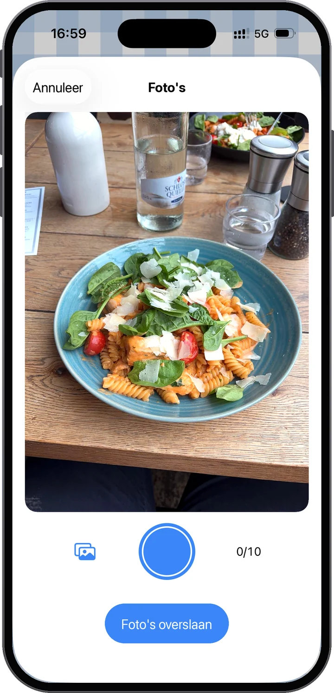
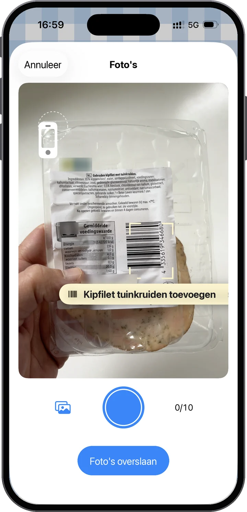
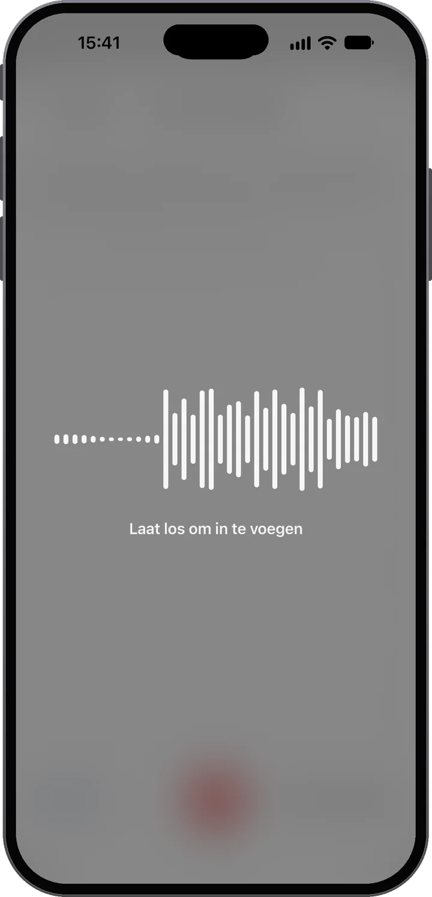
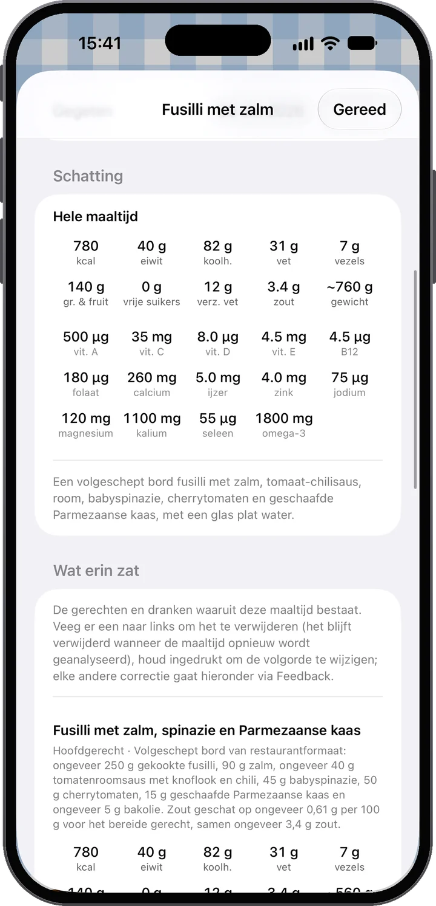
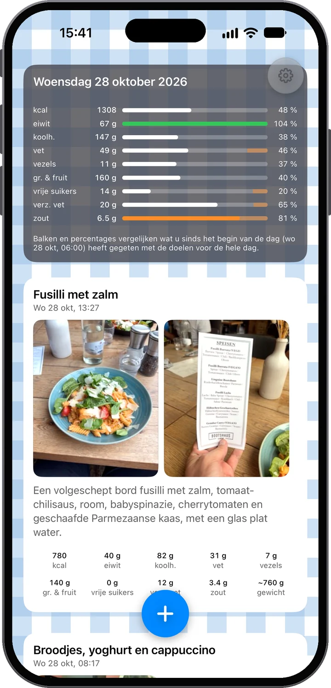
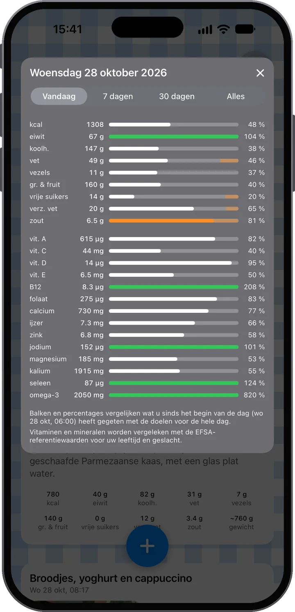

Zie het. Begrijp het.
Klik je maaltijd en Food Moments maakt er een feed van je dag van: foto’s eerst, direct daaronder wat er echt in zit. Zeg wat de foto niet laat zien — en zie waar je dag staat vóór de volgende maaltijd.

Bijna geen moeite erin — veel inzicht eruit.
Fotografeer je eten — één foto of meerdere. Voeg dan context toe: typ een notitie, of houd gewoon de microfoon ingedrukt en praat. “Twee gebakken eieren en het kleine broodje” is al genoeg.
De maaltijd wordt voor je geanalyseerd: energie, eiwit, koolhydraten, vet, vezels, groente en fruit, vrije suikers en zout, gerecht voor gerecht, en ze zegt eerlijk hoe zeker ze is — en zie hoe die in je dag past.
Door de dag heen vult je feed zich en lopen de dagbalken vol. Je ziet hoe je eetdag zich ontwikkelt en waar je staat — vóór je de volgende maaltijd kiest, niet erna.
De hele dag goed bezig geweest? Je balken laten het zien. Dus neem dat toetje — en voel je er goed bij: je zit nog op koers, en dat zeggen je eigen cijfers, geen gok.

Foto's eerst
De foto is de belangrijkste bron. De analyse leest de gerechten en porties — zelfs een voedingsetiket of barcode als die in beeld is. En het hoeft niet één foto te zijn: een maaltijd kan er tot tien bevatten. Kook je vanavond? Fotografeer de ingrediënten tussendoor en daarna het bord dat op tafel komt — de analyse voegt alles samen.

Of scan de barcode
Richt de camera op een barcode en Food Moments vindt het product met zijn voedingswaardetabel — zonder foto. Scan een paar producten en ze worden één maaltijd; maak er een foto bij van wat je kookte en de analyse gebruikt de exacte waarden van het etiket. Productgegevens van Open Food Facts.

Dan jouw woorden — zoals jij wilt
Vaak zijn de foto's al genoeg. Als dat niet zo is — wat er in de smoothie ging, hoeveel van de pan je echt hebt gegeten — voeg dan context toe in je eigen woorden. Typ je liever? Typ. Maar probeer de microfoon: dicteren draait hier op de nieuwste spraakmodellen, zet je woorden een moment nadat je loslaat in de notitie en blijft overeind op een lawaaiige straat. Hoe dan ook: jouw woorden winnen altijd van de foto — de app luistert naar jou.
Kipsalade, een besmeerde snee zuurdesembrood en een half glas sinaasappelsap.
De gerechten en drankjes waaruit de maaltijd bestaat. Veeg er een weg, houd vast om te herschikken — elke andere correctie loopt via Feedback.
Het eten was duidelijk; hoeveel het was, moest op basis van de foto’s worden ingeschat. Neem de cijfers als benaderend in plaats van exact — de hoeveelheid noemen maakt ze scherper.
Voeding voorbij calorieën
Elke Food Moment wordt uitgesplitst zoals een menukaart het zou doen — elk gerecht en drankje met zijn eigen portie en cijfers, opgeteld tot totalen: energie, eiwit, koolhydraten, vet, vezels, groente en fruit, vrije suikers, zout en een geschat gewicht. En de app zegt eerlijk hoe zeker hij is — zodat je weet wanneer een korte ingesproken notitie de schatting scherper maakt.

Je persoonlijke feed
Je maaltijden, drankjes en tussendoortjes verschijnen in de loop van de dag — foto's eerst, als een persoonlijke feed door de bril van voeding. Bovenaan houdt de dagkaart de tussenstand bij: elke balk vergelijkt wat je tot nu toe hebt gegeten met de doelen voor de hele dag. Een lage balk in de ochtend is geen falen — het is ruimte. Elk doel noemt zijn openbare bron: waar elk doel vandaan komt.
Eén tik dieper
Tik op de dagkaart voor veertien vitaminen en mineralen, vergeleken met de Europese referentiewaarden voor je leeftijd en geslacht. Schakel naar 7 dagen, 30 dagen of alles en zie hoe je weken optellen. Welke veertien, en waarom.


Neem het toetje. Geniet van de pizza. Waar het om gaat, is weten wat het betekent in de context van de rest van je dag — en de volgende keuze maken met betere informatie.
Waar we voor staan
Goed eten geeft energie, ondersteunt je gezondheid en maakt het dagelijks leven beter. Tegelijk eet niemand altijd perfect — en Food Moments maakt dat normaal. Dit is een app voor mensen die om zichzelf geven, niet een die je straft omdat je eet.
Privacy als uitgangspunt
Een account dat alleen je e-mailadres is — geen naam, geen wachtwoord. Je maaltijden staan in de EU, altijd te downloaden of te wissen.
Je account is alleen je e-mailadres. Geen wachtwoord, geen naam — een eenmalige code meldt je aan, en je maaltijden, foto's en geschiedenis staan in je account op servers in de Europese Unie; een nieuwe iPhone brengt zo alles terug. Foto's en notities gaan naar de AI voor de voedingsanalyse waar je zelf om vraagt — met jouw toestemming, en nooit om een profiel op te bouwen; zelf kijken we alleen naar je maaltijden als je Help Food Moments verbeteren aanzet. Ook dicteren blijft in de EU: het heeft een eigen toestemming, één keer gevraagd, en de spraakdienst draait net als de analyse in de EU — niets wat de app verstuurt, verlaat de Europese Unie. Download alles of wis je account wanneer je wilt, gewoon in Instellingen. De details staan in de privacyverklaring, in heldere taal.

De eerste 14 dagen zijn gratis. Zeg je op tijd op in je Apple-account, dan betaal je niets.